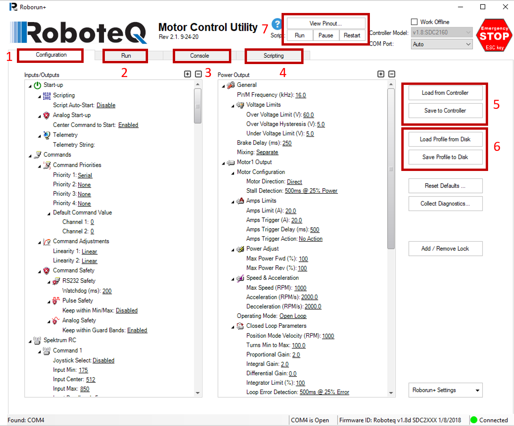
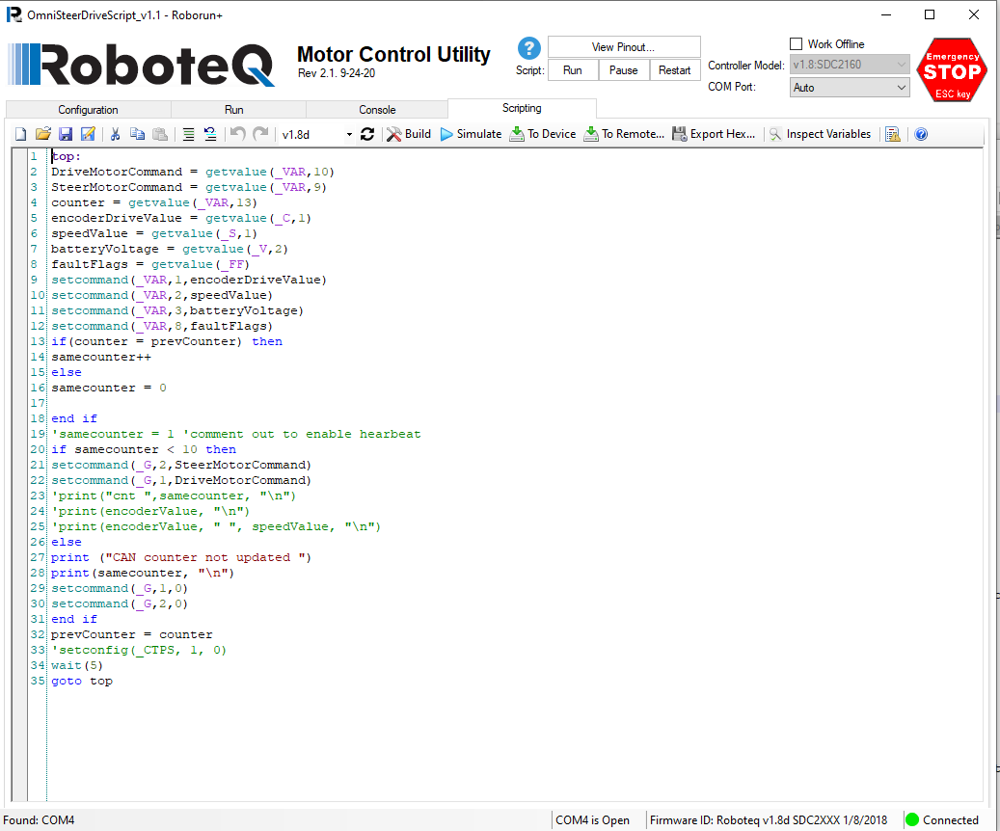
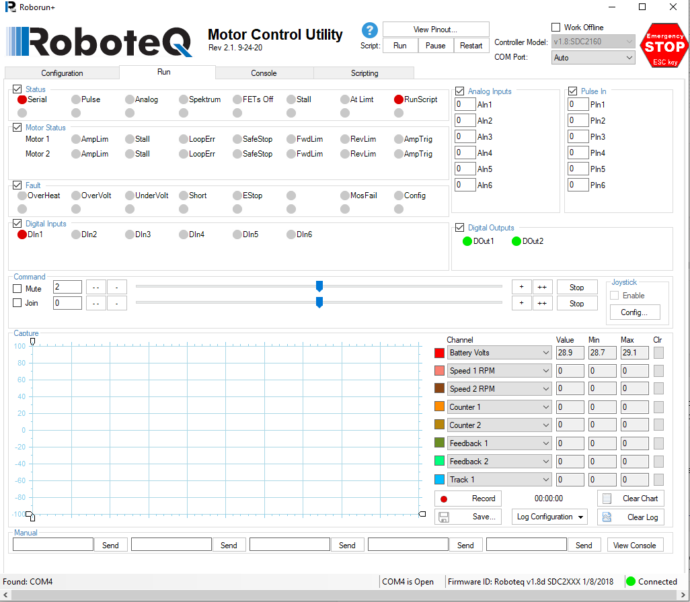
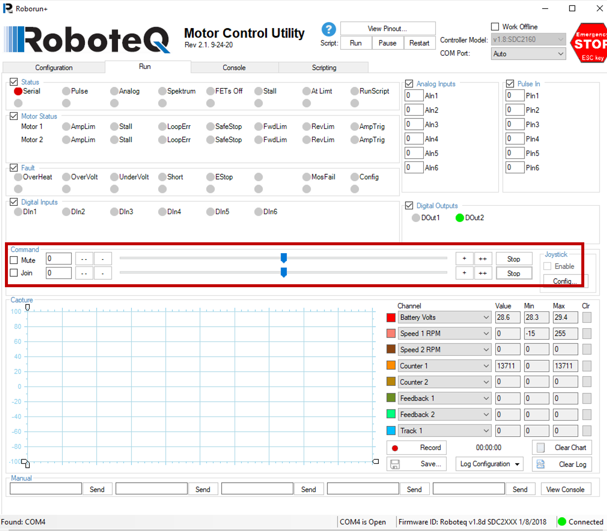

Roboteq Open Loop Motor Controller Configuration
Updated 22.05.2024
Introduction
Roboteq motor controllers are one of many motor controllers that Navitrol supports in AGVs. Roboteq offers different range of motor controllers that can be used for different uses via different interfaces. In this documentation, instructions are provided for configuring the motor controllers to be interfaced with Navitrol.
If a Roboteq motor controller is dual channel, then it can be used to control 2 motors. So, it means 1 Roboteq controller is needed for 1 steering + 1 driving motor or for 2 driving motors. For example, if there is an Omni AGV with 6 wheels, it would need 6 Roboteq controllers that can handle steering + driving of each of the 6 wheels.
It should be noted, that this document covers only open loop control mode with Roboteq controllers.
Setup
The Roboteq offers extensive support and documentation for getting started. All the Roboteq products have specific PC utility software that provides an interface to the user for configuring the Roboteq products.
All product specific datasheets, documentation and software can be downloaded from the Roboteq website. www.roboteq.com
In this document no specific version of motor controller is mentioned since the process for interfacing with Navitrol is same for all the motor controllers.
-
To configure the Roboteq motor controllers, Roborun, a Roboteq motor control utility software needs to be installed on Windows PC.
-
It is assumed that the user has completed all the necessary physical wiring of motor controllers to the driving or steering encoders of the AGV.
-
Use the USB cable to connect the computer with the Roboteq motor controller and start the Roborun utility software.
-
Start the 'Roborun+' app and it should appear as below:
Upload/Save Profile
A profile is basically a file that contains the values to different options and parameters in the configuration window. Make sure that the controller is connected, this can be verified by seeing the 'Connected' in the bottom right corner of the window and a green indicator.

There are different tabs in Roboteq motor control utility.
-
The Configuration tab defines the settings for Inputs and outputs.
-
The Run tab allows different options for debugging and testing the motor controllers.
-
The Console tab allows outputs to be displayed while testing the motor controllers or running the scripts.
-
The Scripting tab allows scripts to be uploaded to motor controller, write, or edit them, as well as simulate the script.
-
The Load from Controller loads the profile if it already existing on the controller and then shows the values in Inputs/Outputs window.
-
If no such profile exists by default on the controller, then user can upload their own profile by using Load Profile from Disk. The profile files can either have an extension of *.cpr or *.xml.
-
The option 7 allows the script to be Run, Paused or Restarted. When a script is running then a user can test the motor controllers.
Input/Outputs Configuration
In Inputs/Outputs not all the parameters need to be configured. The user should decide based on their choice of motor controllers what parameters they need to configure. Navitrol needs only few of the parameters to be configured and they are explained below:
-
Startup- If needed user can define a script that should work whenever the motor controller is started.
-
Commands- In Commands section user need to set up the 'Watchdog' parameter. The watchdog is used for safety and will set the warning or errors after a certain time limit until they are resolved. The first command priority can be set to Serial and a second command priority can be set to Pulses; in case the first priority stops working.
-
Spektrum RC: Navitrol does not use RC so this does not need to be configured.
-
CAN- This needs to be configured if the Roboteq motor controllers are connected using CAN bus and the values for the motor controller parameters should match the Navitrol parameters. For example, Bit rate should be same in both motor controller and Navitrol to allow communication to be carried out via CAN bus. Listen Node ID in the options refers to the Navitrol. CAN mode and communication interval must be defined, and this can be selected from the options such as CAN mode and MiniCAN Send Rate (ms). Roboteq motor controller uses MiniCAN.
a) CAN Mode: MiniCAN should be selected as the option
b) Bit rate: CAN bitrate and should match with can_bitrate_k parameter.
c) Node ID: the Node ID of the Roboteq controller and should match with can_roboteq_nodeid
d) Listen Node ID: should be same as the define in parameter, can_roboteq_listen_nodeid
e) Heartbeat (ms): doesn't matter.
f) MiniCAN Send Rate (ms): 10 Send rate is the interval between each TPDO. So if there are 4 PDO's having and control interval of 40 ms then it should be set to 10ms (40/4).
g) TPDO 1 Send Rate (ms): 10 CAN Open
h) TPDO 2 Send Rate (ms): 20
i) TPDO 3 Send Rate (ms): 30
j) TPDO 4 Send Rate (ms): 40
k) TPDO 1 Transmission Type: 255 Transmission Type is CANOpen stuff
l) TPDO 2 Transmission Type: 255
m) TPDO 3 Transmission Type: 255
n) TPDO 4 Transmission Type: 255
o) CANOpen Autostart: Disabled Not relevant to MiniCAN
-
Encoder- This option also needs to be configured for the encoders of the motor controllers. User can select between Command or Feedback option.
-
Digital Inputs: Navitrol does not use any digital inputs but this can be set based on the use case the customer is using or if a customer has a requested a certain feature that requires this to be configured.
-
Analog Inputs- Navitrol does not use any analog inputs.
-
Pulse Inputs- Navitrol does not use any pulse inputs.
-
Digital Outputs- The digital output should be set as high when Motor is on.
-
User-Defined Values- Navitrol does not require any values to be defined but user can set them if needed.
Power Output Configuration
The power output is to be configured by the user based on the choice of motor controllers. Since the value will vary depending on different models of the motors and motor controllers, the responsibility lies on the user to get all the instructions from Roboteq for configuring the Power output parameters.
Once the Input/Outputs and Power Output parameters are configured they should be saved to the Controller.
Scripting
The scripts are only required when the Roboteq motor controllers are connected via the CAN bus. These scripts are provided by Navitec to the customers and there are different scripts available for different kinematics such as:
-
Differential drive kinematic has its own script that reads information related to driving of the wheels.
-
Omni and Steer driven have their own script that reads the driving and steering of the wheels.
The user does not need any scripts if the motor controllers are connected via Serial connection.
Uploading Script
To upload the script to the motor controller, click on the 'Scripting' tab on the Motor control utility. Then click on the 'Open' option and select a file from the location where it is saved. The script files are micro basic format and have an extension of 'xx.mbs'. Once uploaded script may look like shown in the picture below:

Saving & Upload Script Files
To save a script file click on the icon that says 'Save As' and select a location where you want to save it. The file will be saved as a 'xx.mbs' file.
Once the file is opened in the motor control utility then it should be uploaded to the motor controller. This can be done via pressing the 'To Device' option.
Testing
Once the parameters are configured correctly or profile is loaded, they should be saved to the Controller. Afterwards if needed then script should be uploaded to the Controller as well. Then click the Run tab for testing the motor and motor controllers as seen in the picture below:

Based on the picture it can be seen that the motor controller is connected via Serial connection (Not CAN) as red indicator is visible on the top left corner before the 'Serial' and under 'Status'.
The 'RunScript' option also has a red light on that means that the script is running.
Also, under 'Digital Input' the digital input 1 is lit red that translate to motor controller having a single input. The Digital outputs shows a green light that translates to motor controller giving outputs.
Press the Pause button for the script and a Red light should turn off next to 'RunScript' option as shown below:

Use the scroll bars highlighted in the picture above to move the wheel by sending target rpm. Make sure ONLY one scroll bar is moved at a single time.
When sending the rpm the wheel should start rotating. This verifies that the connections and parameters are set correctly for the motors and Roboteq motor controllers.
Under 'Channel' on bottom right corner different values can be selected from a drop-down list and they will become visible and change as wheels rotate.
Also test that the encoder value and rpm are being read from the motor controller. This can be checked by selecting the Counter 1 or 2 option and Speed 1 and 2 RPM from the drop-down list. This again depends on the parameters set in the Configuration tab.
Navitrol Parameters
There are different parameters related to Roboteq and they should be configured depending on what kinematic AGV is being used. The general parameters can be configured if needed.
General Parameters
- I, mot_ctrl_max_out, 1000 # maximum output
Parameters for serial connected Roboteq
-
I, roboteq_check_echo, 1 # "0 do not check command echo, 1 check but don't give error if echo doesn't match, 2 give error if echo doesn't match"¨
-
S, roboteq_lift_serial_port, /dev/ttyS0 # Serial port for Roboteq lift controller
-
I, roboteq_brake_output1, -1 #digital out number for first brake, -1 if disabled
-
I, roboteq_brake_output2, -1, #digital out number for second brake, -1 if disabled
-
I, roboteq_motor_controller_type, 0, #Roboteq motor controller type: 0 for brushless, 1 for brushed
-
S, mot_ctrl_serial_port, /dev/ttyS2 # Serial port for first Roboteq controller (steer/diff)
-
S, mot_ctrl_serial_port2, /dev/ttyS2 # Serial port for second Roboteq controller (mecanum)
-
I, roboteq_channel1_right*,* 1 #Set this parameter to 1 if channel 1 of Roboteq motor controller is connected to right wheel, otherwise set it to 0.
-
I, roboteq_channel1_steer*,* 1 # Set this parameter to 1 if channel 1 of Roboteq motor controller is connected to steering of the wheel, otherwise set it to 0.
-
I, mot_ctrl_mecanum_roboteq1_channel1_wheel, 0 #0 = FL, 1 = FR, 2 = RL, 3 = RR
-
I, mot_ctrl_mecanum_roboteq1_channel2_wheel, 0 #0 = FL, 1 = FR, 2 = RL, 3 = RR
-
I, mot_ctrl_mecanum_roboteq2_channel1_wheel, 0 #0 = FL, 1 = FR, 2 = RL, 3 = RR
-
I, mot_ctrl_mecanum_roboteq2_channel2_wheel, 0 #0 = FL, 1 = FR, 2 = RL, 3 = RR
CAN Parameters
-
I, can_roboteq_listen_nodeid, -1 # Roboteq controller CAN listen node id
-
I, can_roboteq_comms_mode, 0 # 0 - miniCAN, 1 - CANOpen; common setting for all Roboteq controllers. For now, it has to be miniCAN and same should be selected on Roboteq side configuration.
-
I, can_roboteq_nodeid, -1 # Roboteq controller CAN transmit node id
-
I, roboteq_channel1_right*,* 1 #Set this parameter to 1 if channel 1 of Roboteq motor controller is connected to right wheel, otherwise set it to 0.